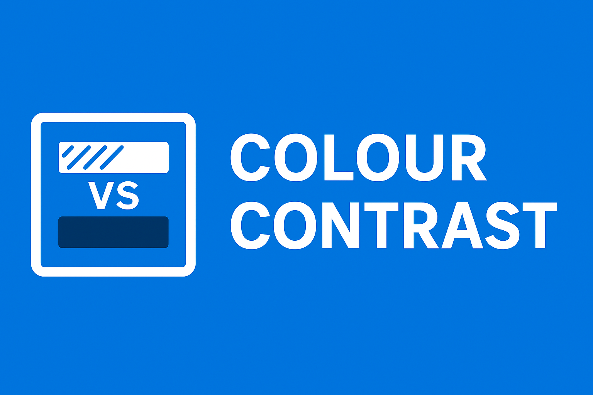
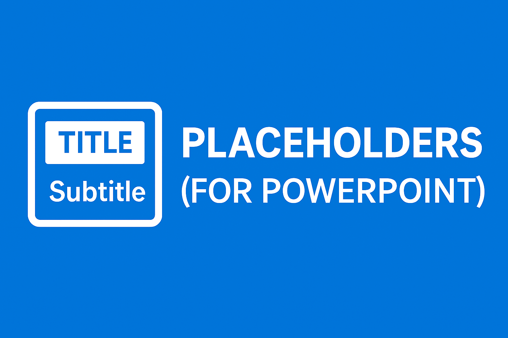

Video Hub 2026
Welcome to the Video Hub! Explore our growing collection of accessibility videos, including quick tips, tutorials, webinar recordings, and training sessions. All videos include captions and transcripts.
Featured Video: Alt text Instructional Video
Instructional video on writing effective alternative text for images. Hosted on Microsoft Stream (SharePoint); GC intranet sign-in required.
Recent Videos

Colour Contrast Instructional Video
Learn how to apply proper colour contrast to ensure text and visual elements meet accessibility standards.
InstructionalHeading Styles Instructional Video
Discover how to use heading styles correctly to create well-structured, accessible documents and presentations.
Instructional
Placeholders & Slide Layouts Instructional Video
Learn how to use placeholders and slide layouts in presentations to improve structure and accessibility.
InstructionalPrevious Years
Browse video recordings from previous years:
- 2025: View 2025 Videos
- 2024: View 2024 Videos
- 2023: View 2023 Videos
- 2022: View 2022 Videos
- 2021: View 2021 Videos
- Archived: All Archived Videos